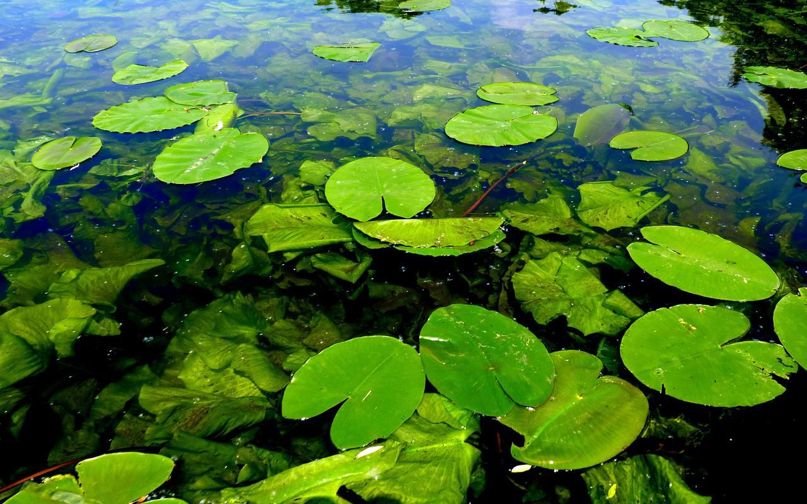

Тритон – это не жаба и не ящерица, это животное, чья жизнь проходит в двух стихиях: в воде и на суше.
Размер взрослых тритонов может достигать от 10 до 20 см в длину. Веретенообразное туловище соединяется с довольно большой плоской головой посредством короткой шеи и заканчивается хвостом, имеющим сжатую с боков форму и равным по длине телу.
Четыре конечности хорошо развиты и имеют одинаковую длину. На передних насчитывается по 3-4 пальца, а на задних до 5. Тритоны хорошо плавают и резво бегают по дну водоема под толщей воды, но на суше они довольно неуклюжи.
Дыхание тритона происходит следующим образом: личинки получают кислород при помощи жабр, а взрослые особи дышат кожей и легкими, в которые трансформируются жабры тритона. У амфибии есть особая кожистая оторочка на хвосте, при помощи которой из воды извлекается кислород. Если тритоны переходят к почти полному наземному образу жизни, она атрофируется.
Кожа тритона, покрывающая тело животного, может быть как бугристой, так и гладкой, на животе она всегда без выраженного рельефа. На окраску тритона влияет не только видовая принадлежность, но и среда обитания. От этих же параметров зависит форма и размер спинного гребня тритона самца, появляющегося в брачный период.
Слабое зрение тритонов компенсируется хорошим обонянием: некоторые особи «узнают» по запаху местонахождение своей добычи уже за 200-300 метров. Конические зубы тритона находятся на небе в виде двух параллельных рядов, иногда расходящихся под небольшим углом, поэтому такое строение ротовой полости позволяет земноводному захватывать и надежно удерживать жертву.
Ареал распространения тритонов охватывает практически весь земной шар, за исключением Антарктиды, Австралии и Африки. Тритоны обитают в Северной и Южной Америке, Европе и Азии, встречаются даже за Полярным кругом.
Земноводное тритон живет в местах, богатых растительностью. После выхода из водоема он пережидает жаркие часы в укрытии, которым могут служить опавшая древесная кора, груды камней, трухлявые пни и заброшенные норы мелких грызунов. Зимой животное тритон уходит в спячку (длящуюся почти 8 месяцев), спрятавшись в укромном месте: например, под кучей валежника, зарывшись в землю или в опавшую листву.
Основной пищей тритонов являются беспозвоночные. В период обитания в водоемах это могут быть мелкие ракообразные, личинки комаров и поденок. При выходе на сушу тритоны едят слизней, дождевых червей и личинок различных наземных насекомых. Активность амфибии проявляют в ночное время.
Яда, содержащегося на кожных покровах желтобрюхого тритона, обитающего в Северной и Южной Америках, хватит, чтобы умертвить 25 тыс. мелких грызунов или одного взрослого мужчину. Токсические свойства яда тритона с течением времени не теряются.
Тритоны обладают невероятной регенеративной способностью. Восстанавливаются не только утерянный хвост или конечности, но и внутренние органы, а также случайно поврежденные глаза.
